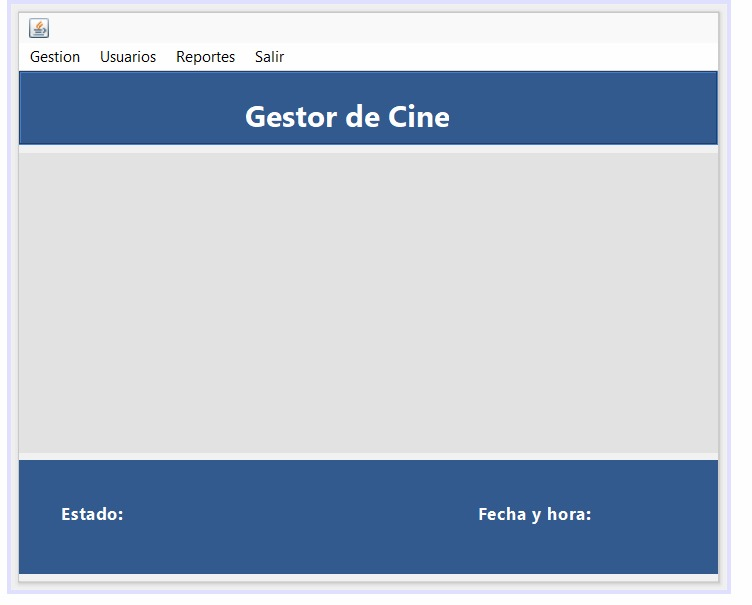
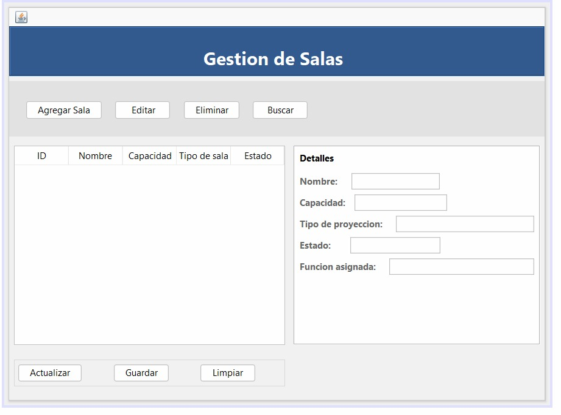
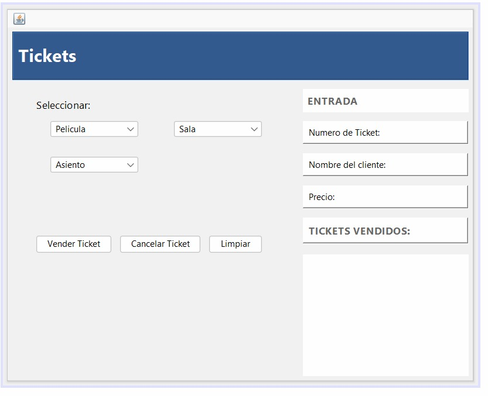
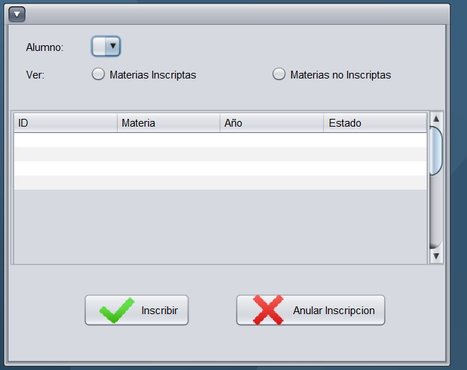
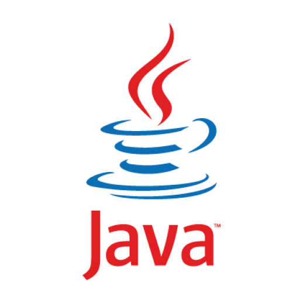
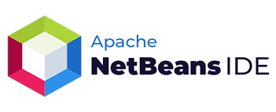
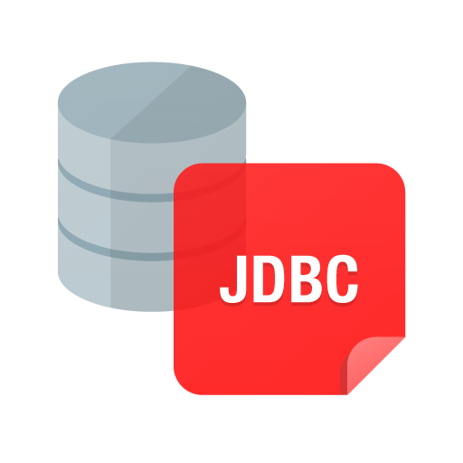

Proyecto de realidad - CinemaCentro




Desafío propuesto
El objetivo del proyecto fue diseñar y desarrollar una aplicación completa en
Java con conexión a MySQL, que permitiera gestionar la venta de entradas,
la proyección de películas y la administración de salas en un complejo de cines.
Etapas del desarrollo
- Diseño de la base de datos y conexión con MySQL.
- Desarrollo de las clases principales con operaciones ABM y consultas SQL embebidas.
- Implementación de la interfaz gráfica (GUI) con funcionalidades completas.
Requerimientos principales
- Registrar compradores, películas, salas, funciones y lugares.
- Gestionar la compra de entradas tanto en taquilla como online.
- Generar tickets de compra con datos de función, asiento y forma de pago.
- Realizar consultas e informes de películas, funciones y ventas.
- Mantener la cartelera actualizada con próximos estrenos.
Desarrollo técnico
Base de datos
Creamos la estructura relacional en MySQL, definiendo las tablas y relaciones entre:
Comprador, Película, Sala, Proyección, Lugar y TicketCompra.
Lógica en Java
- Aplicación de principios de POO (abstracción, encapsulamiento, herencia).
- Métodos ABM y consultas SQL embebidas.
- Clase de conexión centralizada con la base de datos.
Interfaz gráfica (GUI)
- Diseñada en Java Swing, intuitiva y dinámica.
- Permite registrar compradores y películas, vender entradas y generar tickets.
- Organización visual mediante paneles y pestañas interactivas.
Funcionalidades destacadas
- Gestión de lugares ocupados/libres por función.
- Simulación de compra online con código de retiro.
- Listados dinámicos por película, sala y horario.
- Reportes automáticos de ventas.
- Actualización de películas en cartelera y estrenos.
Tecnologías utilizadas





Resultado
El proyecto CinemaCentro integró todas las etapas del desarrollo de software: análisis, modelado, programación, base de datos e interfaz gráfica.
Logramos un sistema funcional, modular y escalable que refleja la planificación y el trabajo en equipo.
Trabajo en equipo
- Diseño de base de datos
- Desarrollo de clases
- Conexión y pruebas
- Diseño visual y usabilidad
La colaboración fue clave para integrar todas las partes en una aplicación completa y coherente.
Lo que aprendimos
- Aplicar POO en un proyecto real.
- Integrar Java + MySQL con consultas embebidas.
- Desarrollar interfaces gráficas funcionales en Swing.
- Trabajar con repositorios colaborativos (Git).
- Planificar en equipo las distintas fases del desarrollo.
Proyecto Gym - SPA
El proyecto consistió en el desarrollo de un prototipo de producto digital orientado al ámbito fitness,
diseñado bajo una metodología centrada en el usuario.
La propuesta fue crear una aplicación móvil nativa (Android/iOS) que ayude a las personas
a organizar sus rutinas de entrenamiento, controlar su progreso y mantener la motivación diaria.
Objetivos del proyecto
- Validar el prototipo mediante testeo con usuarios reales.
- Diseñar una interfaz (UI) aplicando principios de diseño visual y accesibilidad.
- Incorporar movimiento e interacción siguiendo los principios de motion design.
- Desarrollar una presentación profesional del proyecto para el portafolio.
Metodología de trabajo
1. Investigación y definición
Se realizaron entrevistas con usuarios para identificar necesidades reales y oportunidades de mejora.
A partir de los hallazgos, se definió el MVP y el POV centrados en simplicidad y funcionalidad.
2. Arquitectura y flujo de usuario
Se diseñó el user flow con el recorrido principal: inicio de sesión, elección de rutina, seguimiento de progreso y notificaciones.
Se creó la arquitectura de información priorizando claridad y accesibilidad.
3. Wireframes y evolución visual
El proyecto avanzó desde wireframes de baja fidelidad en papel y Figma hacia versiones de alta fidelidad
con contenidos reales, tipografía, colores y componentes del UI Kit.
4. Prototipo funcional
Se desarrolló un prototipo interactivo en Figma, incluyendo animaciones, transiciones y microinteracciones
que permiten simular el recorrido completo de la aplicación.
Principales características del prototipo
- Inicio personalizado con registro y selección de objetivos.
- Rutinas adaptadas al nivel y tiempo disponible.
- Seguimiento mediante estadísticas visuales.
- Recordatorios y notificaciones motivacionales.
- Modo oscuro y diseño accesible.
Diseño visual y UI Kit
Sistema visual coherente con colores negro, gris oscuro y verde.
Tipografía sans-serif legible, botones e íconos con jerarquía clara.
- Tipografía moderna sans-serif.
- Componentes reutilizables y consistentes.
- Aplicación de leyes UX: proximidad, contraste y consistencia.
Validación UX
- Entrevistas cualitativas.
- Pruebas de usabilidad.
- Evaluación heurística de Nielsen.
- Card sorting para validar navegación.
Los resultados permitieron optimizar el flujo, mejorar menús y simplificar el acceso a funciones principales.
Elevator Pitch
“GymFit App es tu entrenador personal digital. Diseñada para adaptarse a tu ritmo, metas y motivación,
te ayuda a crear hábitos saludables y mantener constancia desde tu teléfono.”
Resultado final
El proyecto culminó con un prototipo de alta fidelidad completamente funcional, combinando diseño atractivo,
accesibilidad y microinteracciones.
Se logró una app intuitiva, estética y centrada en el usuario.
Aprendizajes y conclusiones
- Validar cada decisión con usuarios reales.
- Equilibrar estética y funcionalidad.
- Aplicar guías de estilo y sistemas de diseño.
- Usar microinteracciones para enriquecer la experiencia.
- Presentar el proceso de diseño de forma clara y profesional.